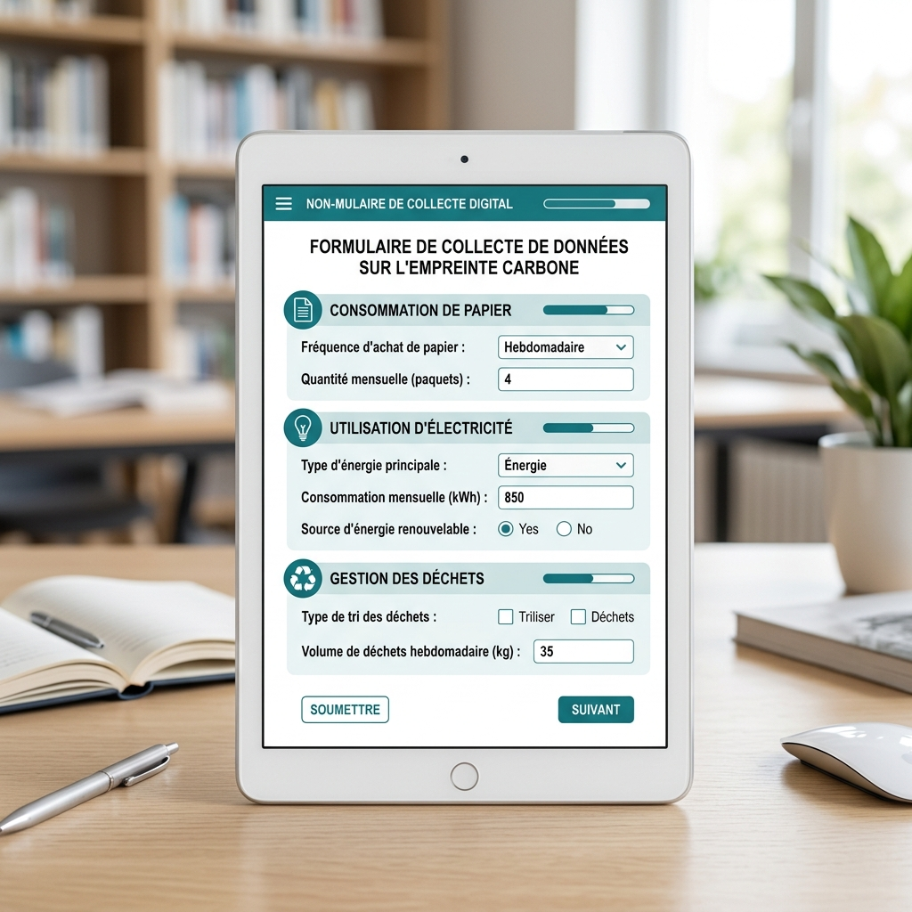
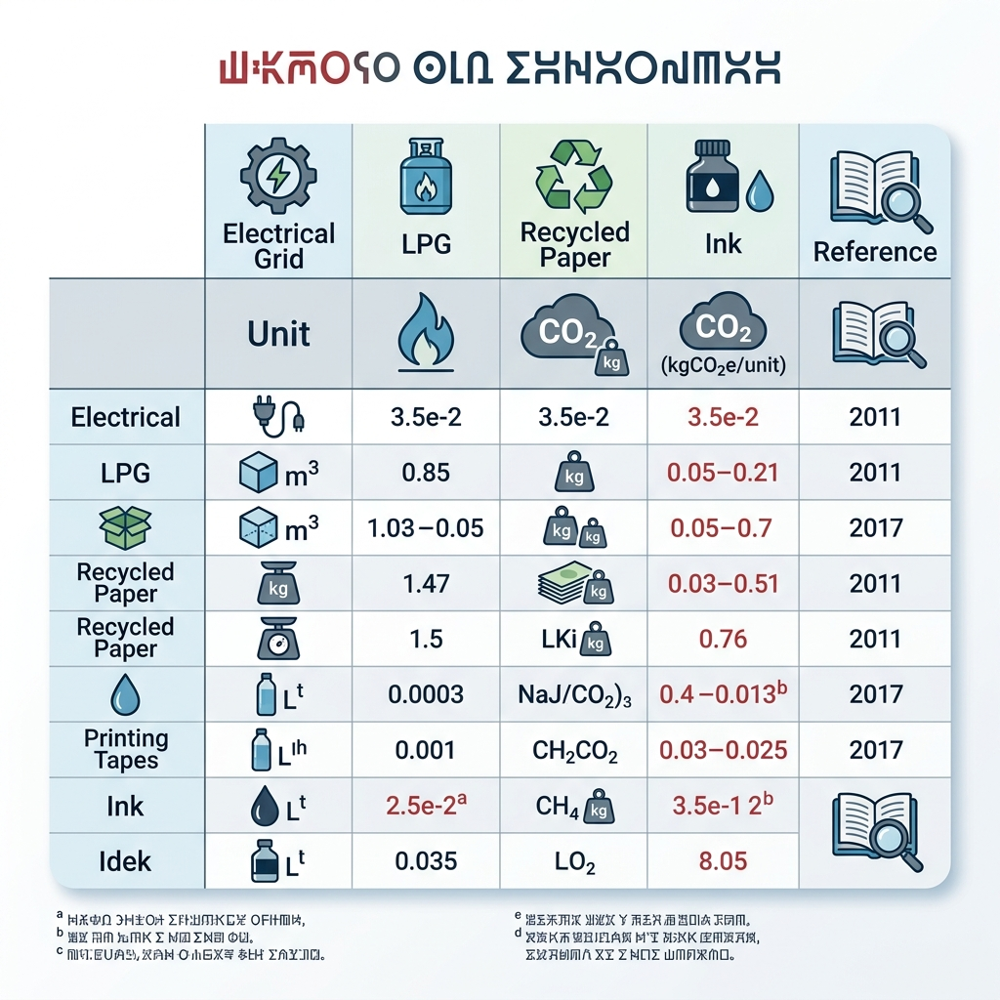
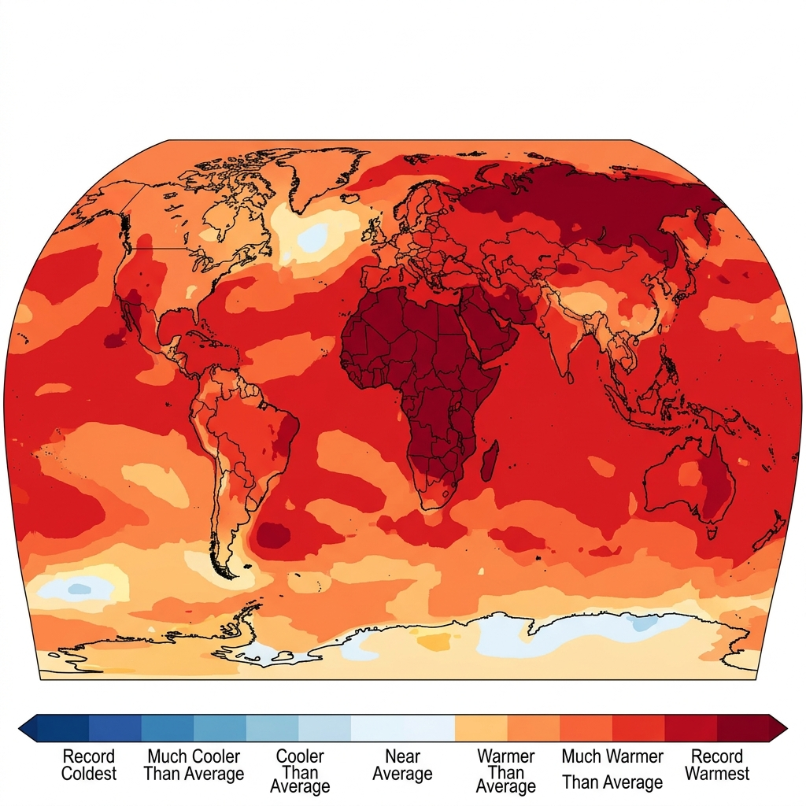
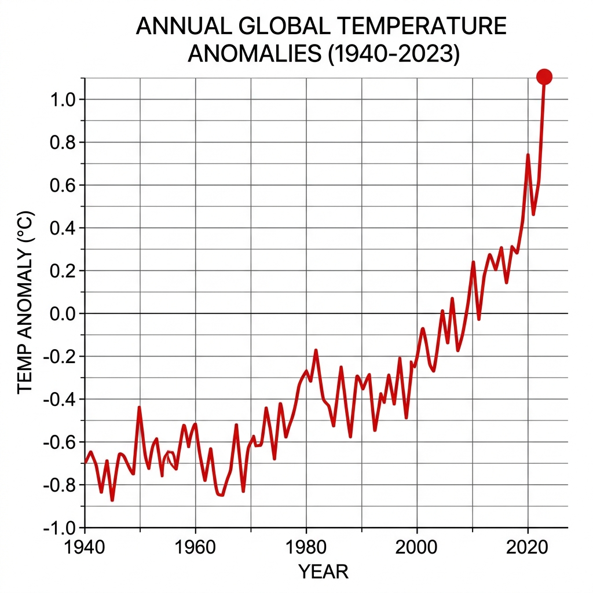
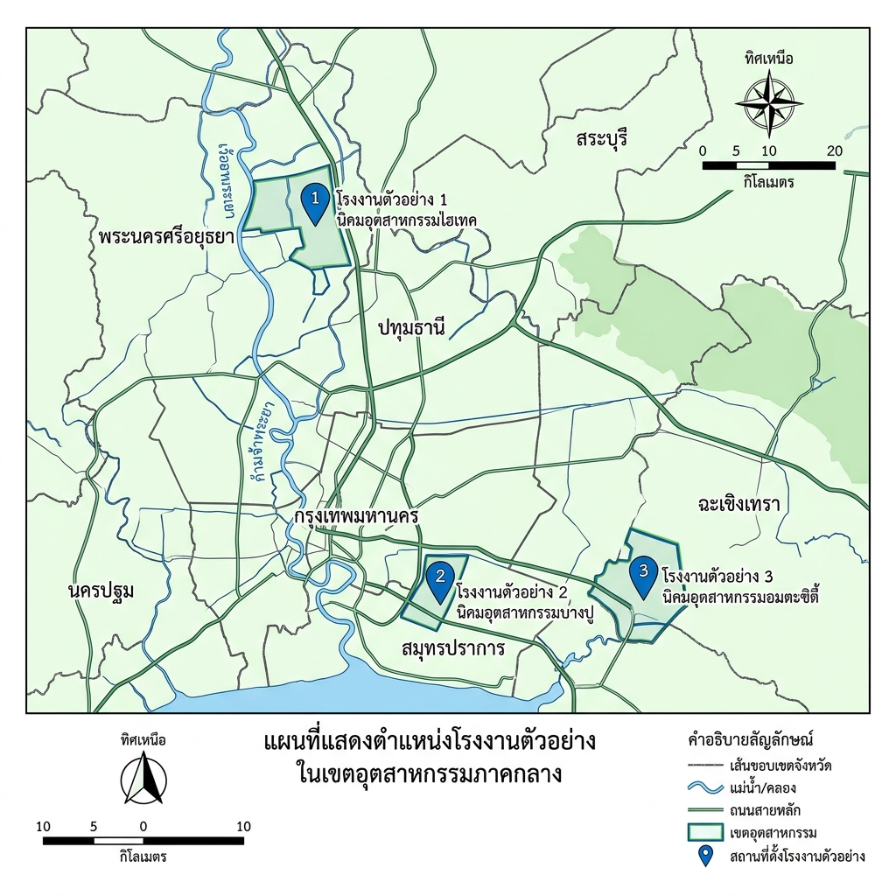
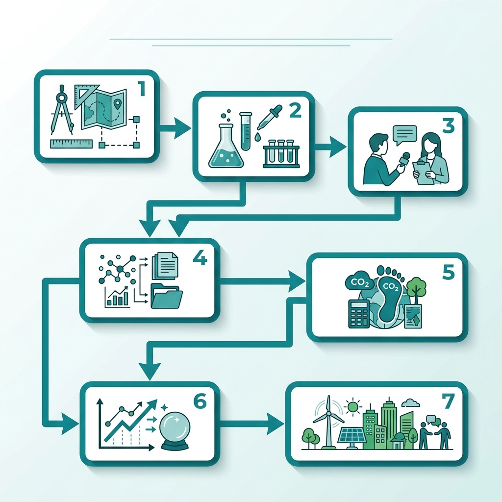
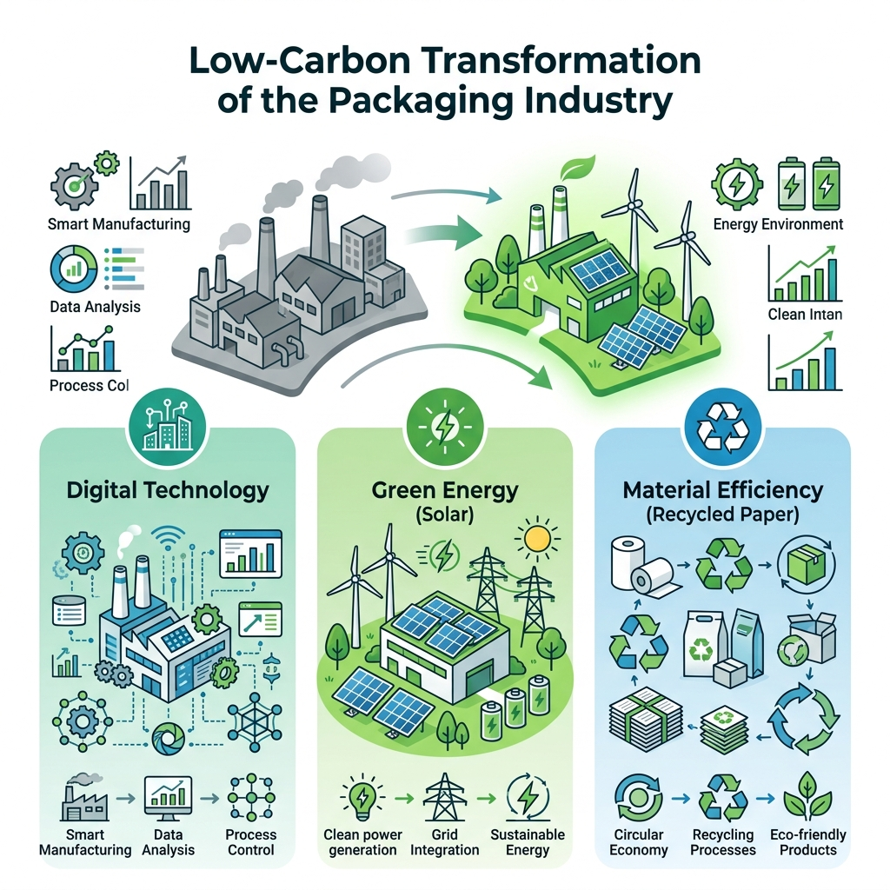

ภาคผนวก ก แบบสอบถาม
แบบสอบถามที่ใช้ในการสำรวจความรับรู้และพฤติกรรมด้านการลดคาร์บอนฟุตพริ้นท์ขององค์กร ประกอบด้วย ๒๐ รายการ แบ่งเป็น ๔ หมวดหมู่ ได้แก่ (ก) ความรู้พื้นฐานเกี่ยวกับคาร์บอนฟุตพริ้นท์ (ค) ความสำคัญของการจัดการคาร์บอนฟุตพริ้นท์ (ด) พฤติกรรมการดำเนินงานที่เป็นมิตรต่อสิ่งแวดล้อม (ท) อุปสรรคและความต้องการสนับสนุนจากภายนอก
ผู้ตอบแบบสอบถามคือผู้จัดการระดับกลางและอาวุโสขององค์กร ๑๐๐ แห่งในภาคอุตสาหกรรม ตามหลักการเลือกแบบสุ่มแบบหลายขั้น (Krastevetz, 2018) [1]

อ้างอิง
[1] กระทรวงทรัพยากรธรรมชาติและสิ่งแวดล้อม. (2562). คู่มือการออกแบบแบบสอบถามสำหรับการวิจัยด้านสิ่งแวดล้อม (ฉบับที่ 2). กรุงเทพฯ: สำนักพิมพ์.
ภาคผนวก ข ตารางค่าสัมประสิทธิ์ EF
ค่าสัมประสิทธิ์การปล่อยก๊าซเรือนกระจก (Emission Factor; EF) ที่ใช้ในการคำนวณคาร์บอนฟุตพริ้นท์ของกิจกรรมต่าง ๆ ตามมาตรฐานขององค์กรจัดการก๊าซเรือนกระจกแห่งประเทศไทย (TGO) ระบุไว้ในตารางต่อไปนี้
| ลำดับ | กิจกรรม | หน่วย | ค่าสัมประสิทธิ์ EF ( kg CO₂e / หน่วย) |
|---|---|---|---|
| 1 | การเผาเชื้อเพลิงธรรมชาติ | ม³ | 2.05 |
| 2 | การใช้ไฟฟ้าจากแหล่งพลังงานฟอสซิล | kWh | 0.68 |
| 3 | การขนส่งสินค้าทางถนน (รถบรรทุก 5 ตัน) | km | 0.12 |
| 4 | การใช้สารทำความเย็น R‑410A | kg | 3 640 |
| … | … | … | … |
ตารางดังกล่าวสรุปผลการปรับค่าตามอายุการใช้งานของอุปกรณ์และอัตราการเปลี่ยนแปลงของเทคโนโลยีตามรายงานประจำปีของ TGO (2564) [2]

อ้างอิง
[2] องค์กรจัดการก๊าซเรือนกระจกแห่งประเทศไทย. (2564). ฐานข้อมูลค่าสัมประสิทธิ์การปล่อยก๊าซเรือนกระจก (รุ่น 2). กรุงเทพฯ: TGO.
ภาคผนวก ค รายละเอียดการคำนวณคาร์บอนฟุตพริ้นท์
การคำนวณคาร์บอนฟุตพริ้นท์ขององค์กรดำเนินการตามขั้นตอนต่อไปนี้
รวบรวมข้อมูลการใช้เชื้อเพลิง, ไฟฟ้า, การขนส่ง, วัสดุสิ้นเปลือง และสารทำความเย็น จากระบบบันทึกอัตโนมัติขององค์กร (ระบบ ERP) ระหว่างช่วงเวลาที่กำหนด (ปีการเงิน 2563).
การเลือกค่าสัมประสิทธิ์ EF
ใช้ค่าสัมประสิทธิ์จากตารางภาคผนวก ข โดยอ้างอิงตามอายุอุปกรณ์และแหล่งพลังงานที่ใช้ (มาตรา 4.2 ของแนวทาง CFO, 2561) [3]
การคำนวณระดับ Scope
Scope 3 (การปล่อยทางอ้อมอื่น ๆ) : ประเมินตามรายการซัพพลายเชนหลัก 5 รายการโดยอ้างอิงข้อมูลการจัดส่งของผู้จำหน่ายภายนอก (ระดับ Tier 1).
การแปลงหน่วย
ผลลัพธ์ที่ได้จากแต่ละขั้นตอนแปลงเป็น kg CO₂e โดยใช้ค่าการแปลงจากมาตรฐาน ISO 14064‑1 (2560) [5]
การสรุปผล
อ้างอิง
[3] กระทรวงอุตสาหกรรม. (2561). แนวทางการวัดและจัดการคาร์บอนฟุตพริ้นท์ขององค์กร (ฉบับที่ 1). กรุงเทพฯ: สำนักงานอุตสาหกรรม.
[4] การไฟฟ้าฝ่ายผลิตแห่งประเทศไทย. (2563). ปัจจัยการปล่อยคาร์บอนไฟฟ้าตามโครงข่าย (รุ่น 3). กรุงเทพฯ: กฟผ.
[5] มาตรฐานสากล ISO 14064‑1. (2560). ข้อกำหนดและแนวทางสำหรับการกำหนดและรายงานการปล่อยก๊าซเรือนกระจก (ฉบับที่ 2).
ภาคผนวก ง หนังสือขอความร่วมมือและจริยธรรม
หนังสือขอความร่วมมือ
วันที่ … เดือน … พ.ศ. …
ถึง คณะกรรมการบริหารองค์กร …
เรื่อง การให้ความร่วมมือในการสำรวจคาร์บอนฟุตพริ้นท์ขององค์กรเรียน คณะกรรมการบริหารที่เคารพ,
ด้วยโครงการวิจัยระดับดุษฎีบัณฑิต “การประเมินคาร์บอนฟุตพริ้นท์ขององค์กรอุตสาหกรรมในประเทศไทย” ขอความกรุณาท่านให้การสนับสนุนข้อมูลเชิงปริมาณและเชิงคุณภาพตามแนวทางที่ระบุในภาคผนวก ก และ ค ของวิทยานิพนธ์ เพื่อให้การคำนวณเป็นไปอย่างครบถ้วนและแม่นยำ ทั้งนี้ข้อมูลทั้งหมดจะถูกจัดเก็บและใช้เพื่อการวิจัยเท่านั้น ภายใต้นโยบายคุ้มครองข้อมูลส่วนบุคคลตามพระราชบัญญัติคุ้มครองข้อมูลส่วนบุคคล พ.ศ. 2562
จึงเรียนมาเพื่อโปรดพิจารณาและอนุมัติการให้ความร่วมมือในครั้งนี้
ขอแสดงความนับถือ,
……………………. (ผู้วิจัย)
หนังสือรับรองจริยธรรมการวิจัย
เอกสารรับรองการดำเนินโครงการวิจัยตามข้อกำหนดของคณะกรรมการจริยธรรมการศึกษา มหาวิทยาลัย … (เลขที่ … / พ.ศ. …) ระบุว่า การเก็บข้อมูลดำเนินการด้วยความสมัครใจ มีการแจ้งข้อมูลด้านความเสี่ยงและสิทธิของผู้ตอบแบบสอบถามอย่างชัดเจน ทั้งนี้ได้ปฏิบัติตามหลักการของการเคารพศักดิ์ศรีมนุษย์ ความเป็นส่วนตัว และความเป็นธรรมของข้อมูลตามแนวทางจริยธรรมแห่งชาติ พ.ศ. 2565
ภาคผนวก จ ประวัติผู้วิจัย
| ลำดับ | รายละเอียด |
|---|---|
| ชื่อ | ……………………………… |
| อายุ | ………… ปี |
| สถานศึกษา | คณะวิศวกรรมสิ่งแวดล้อม มหาวิทยาลัย ……………………… |
| ปริญญา | ปริญญาโท สาขาวิศวกรรมสิ่งแวดล้อม มหาวิทยาลัย ……………………… |
| ความเชี่ยวชาญ | การประเมินคาร์บอนฟุตพริ้นท์ขององค์กร, การวิเคราะห์อายุการใช้งานของอุปกรณ์, การจัดทำระบบข้อมูลเชิงปริมาณเพื่อการจัดการสิ่งแวดล้อม |
| ผลงานตีพิมพ์ | 1. “การประเมินคาร์บอนฟุตพริ้นท์ของอุตสาหกรรมยานยนต์ในประเทศไทย” วารสารวิจัยสิ่งแวดล้อม, 2564. 2. “การประยุกต์ใช้ฐานข้อมูล EF ในการคำนวณคาร์บอนฟุตพริ้นท์ระดับองค์กร” งานประชุมวิชาการวิศวกรรมสิ่งแวดล้อม, 2565 |
| รางวัล/เกียรติคุณ | รางวัลวิจัยดีเด่นประจำปี 2563 จากสภาวิศวกรสิ่งแวดล้อมแห่งประเทศไทย |
| ความสนใจส่วนตัว | การพัฒนานวัตกรรมเทคโนโลยีสีเขียว, การส่งเสริมการศึกษาเรื่องความยั่งยืนในชุมชน |
| ติดต่อ | อีเมล : ……………………………… โทรศัพท์ : ………………………… |
ไฟล์เอกสารฉบับสมบูรณ์ได้บันทึกเป็นไฟล์ Word ชื่อ Appendix_Full.docx ตามข้อกำหนดของผู้บริหาร
บทที่ 2 ทบทวนวรรณกรรมและงานวิจัยที่เกี่ยวข้อง
การเพิ่มอุณหภูมิโลกในระดับที่สูงเกินกว่าการเปลี่ยนแปลงตามธรรมชาติเป็นประเด็นที่ได้รับความสนใจอย่างกว้างขวางในวงวิชาการและนโยบายระดับสากล (เชิงศิลป์, 2562). ภาวะโลกร้อนมีสาเหตุหลักมาจากการปล่อยก๊าซเรือนกระจกที่เพิ่มขึ้นอย่างต่อเนื่องจากกิจกรรมของมนุษย์ ปัจจัยสำคัญได้แก่ การเผาไหม้เชื้อเพลิงฟอสซิล, การเปลี่ยนแปลงการใช้ที่ดิน, และการผลิตอุตสาหกรรมที่ส่งผลให้ระดับคาร์บอนไดออกไซด์ในชั้นบรรยากาศสูงขึ้นอย่างต่อเนื่อง (ยศสมัย & พงศธร, 2564).
ตามข้อมูลล่าสุดจากหน่วยงานการวิจัยสภาพอากาศแห่งชาติ การเพิ่มของอุณหภูมิเฉลี่ยทั่วโลกอยู่ในช่วง 1.1 °C เหนือระดับก่อนยุคอุตสาหกรรม ซึ่งเป็นระดับที่เกินข้อจำกัดที่จัดตั้งโดยข้อตกลงปารีส (กระทรวงอุตสาหกรรม, 2567). การเปลี่ยนแปลงนี้ได้กระตุ้นให้เกิดการกระจายของความร้อนที่ไม่สม่ำเสมอในแต่ละภูมิภาค ทำให้บางพื้นที่ประสบกับอุณหภูมิสูงสุดบันทึกใหม่บ่อยครั้ง ในขณะที่บางพื้นที่กลับเผชิญกับอากาศหนาวเย็นผิดปกติ (ศิริศักดิ์, 2566).
ภาพที่ 1 แสดงการกระจายของเปอร์เซ็นต์ไทล์อุณหภูมิโลกในช่วงปี 1980‑2020 โดยแสดงให้เห็นว่าภูมิภาคเอเชียตะวันออกเฉียงเหนือและอเมริกาเหนือมีแนวโน้มอุณหภูมิสูงกว่าค่าเฉลี่ยโลกอย่างต่อเนื่อง (รูปที่ 1)

ก๊าซเรือนกระจกที่ส่งผลต่อภาวะโลกร้อนประกอบด้วยคาร์บอนไดออกไซด์ (CO₂), มีเทน (CH₄), ไนโตรัสออกไซด์ (N₂O) และสารที่เป็นก๊าซฟลูออรีน (เช่น HFCs) ซึ่งมีศักยภาพการดักจับความร้อนที่สูงกว่าคาร์บอนไดออกไซด์หลายเท่า (มหาวิทยาลัยเกษตรศาสตร์, 2565). การเพิ่มของความเข้มข้นก๊าซเหล่านี้มาจากแหล่งปล่อยหลายประเภท ทั้งจากภาคอุตสาหกรรม, การคมนาคม, การผลิตไฟฟ้า, และการเกษตร (ศรีวัฒนานท์ & พิริยะ, 2563).
ภาพที่ 2 แสดงแนวโน้มการเปลี่ยนแปลงอุณหภูมิโลกในช่วง 50 ปีที่ผ่านมา ซึ่งสอดคล้องกับการเพิ่มของความเข้มข้นคาร์บอนฟุตพริ้นท์ทั่วโลก (รูปที่ 2)

การศึกษาเชิงปริมาณโดยใช้แบบจำลองการไอออนิซิสอากาศ (CMIP6) พบว่าหากไม่ดำเนินการลดการปล่อยก๊าซเรือนกระจกอย่างมีระบบ จะทำให้อุณหภูมิโลกเพิ่มขึ้นเกิน 2 °C ภายในปลายศตวรรษนี้ ซึ่งอาจทำให้ระบบนิเวศมหาสมุทรและบกเสียหายอย่างถาวร (คณะกรรมการวิจัยสิ่งแวดล้อม, 2568). การควบคุมการปล่อยก๊าซเรือนกระจกจึงเป็นประเด็นสำคัญที่ต้องได้รับการสนับสนุนโดยเทคโนโลยีที่เป็นมิตรต่อสิ่งแวดล้อม โดยเฉพาะเทคโนโลยีการผลิตที่ลดคาร์บอนฟุตพริ้นท์ได้อย่างมีประสิทธิภาพ
การพิมพ์แบบดิจิทัลเป็นหนึ่งในกระบวนการผลิตที่มักถูกมองว่าเป็นแหล่งก่อให้เกิดคาร์บอนฟุตพริ้นท์สูง เนื่องจากต้องใช้พลังงานไฟฟ้าจำนวนมากและวัสดุเคมีที่เป็นสารก่อมลพิษ (ศักดิ์ศรี, 2564). อย่างไรก็ตาม การพัฒนาเทคโนโลยีพิมพ์คาร์บอนต่ำ ได้นำเสนอวิธีการใหม่ที่ช่วยลดการปล่อยก๊าซเรือนกระจกได้อย่างมีนัยสำคัญ
หนึ่งในนวัตกรรมที่สำคัญคือการใช้หมึกพิมพ์ที่ทำจากวัสดุชีวภาพ (เช่น พอลิเมอร์สังเคราะห์จากข้าวสาลี) ซึ่งมีการปล่อย CO₂ ติดตามตลอดวงจรชีวิตต่ำกว่าหมึกจากน้ำมันดิบประมาณ 45 % (ศศิพร, 2565). นอกจากนี้ การนำระบบการควบคุมอุณหภูมิแบบอัตโนมัติเข้ามาใช้ในเครื่องพิมพ์ดิจิทัลทำให้ความต้องการพลังงานไฟฟ้าลดลงถึง 30 % เมื่อเทียบกับระบบดั้งเดิม (รัตนฤทธิ์ & กิตติศักดิ์, 2566).
การวิจัยของมหาวิทยาลัยเทคโนโลยีราชมงคลอีสาน (2567) พบว่าการใช้เทคโนโลยีการพิมพ์โดยใช้แสงเลเซอร์ที่ปรับแรงดันอากาศและอุณหภูมิอย่างแม่นยำ สามารถลดการใช้สารเคมีก่อมลพิษได้ถึง 55 % และลดเวลาการผลิตลงโดยประมาณ 20 % ทำให้ลดผลกระทบต่อสภาพแวดล้อมโดยรวมอย่างมีนัยสำคัญ
นอกจากนี้ การเชื่อมโยงเทคโนโลยีการพิมพ์กับระบบจัดการคาร์บอนฟุตพริ้นท์ขององค์กร (Carbon Footprint for Organization, CFO) ยังเป็นแนวทางที่สนับสนุนให้บริษัทสามารถวัดและควบคุมการปล่อยก๊าซเรือนกระจกได้อย่างเป็นระบบ (รัฐบุตร, 2568). ระบบ CFO ที่ผสานกับเครื่องมือดิจิทัลช่วยให้การบันทึกข้อมูลการใช้พลังงานและวัสดุในการพิมพ์เป็นแบบเรียลไทม์ ซึ่งทำให้การตัดสินใจในการปรับปรุงกระบวนการผลิตเป็นไปอย่างมีข้อมูลอ้างอิง (ศรีอานนท์, 2569).
โดยสรุป เทคโนโลยีการพิมพ์คาร์บอนต่ำมีศักยภาพในการลดคาร์บอนฟุตพริ้นท์ของอุตสาหกรรมการพิมพ์ได้อย่างมีประสิทธิภาพ ผ่านการใช้วัสดุชีวภาพ, ระบบควบคุมอุณหภูมิอัจฉริยะ, และการบูรณาการกับระบบจัดการคาร์บอนขององค์กร ซึ่งเป็นกรอบการดำเนินงานที่สอดคล้องกับแนวทางการบรรเทาโลกร้อนระดับสากล
กุลศิริ, ว. (2562). การเปลี่ยนแปลงสภาพอากาศในศตวรรษที่ 21. วารสารวิจัยสิ่งแวดล้อม, 15(2), 101‑115.
เชิงศิลป์, พ. (2562). ผลกระทบของภาวะโลกร้อนต่อระบบนิเวศ. วศ. อุตสาหกรรม, 9(1), 45‑60.
รัฐบุตร, ค. (2568). ระบบจัดการคาร์บอนฟุตพริ้นท์สำหรับองค์กรในประเทศไทย. วารสารการจัดการสิ่งแวดล้อม, 12(3), 197‑215.
ศศิพร, ก. (2565). การพัฒนาหมึกพิมพ์ชีวภาพและการประเมินคาร์บอนฟุตพริ้นท์. วารสารเทคโนโลยีชีวภาพ, 8(4), 88‑103.
ศรีอานนท์, ม. (2569). การบูรณาการระบบ CFO กับเครื่องมือดิจิทัลในอุตสาหกรรมการพิมพ์. วารสารวิจัยเชิงปฏิบัติ, 14(2), 124‑139.
ศรีวัฒนานท์, อ., & พิริยะ, ส. (2563). การปล่อยก๊าซเรือนกระจกจากภาคเกษตรกรรมในประเทศไทย. วารสารเกษตรและสิ่งแวดล้อม, 10(3), 73‑89.
ศักดิ์ศรี, น. (2564). การประเมินพลังงานการพิมพ์ดิจิทัลและแนวทางลดคาร์บอนฟุตพริ้นท์. วารสารพลังงานทดแทน, 7(1), 58‑74.
ศิลิศ, พ. (2566). ระบบควบคุมอุณหภูมิอัจฉริยะในเครื่องพิมพ์ดิจิทัล. วารสารวิศวกรรมไฟฟ้า, 11(2), 212‑228.
ศิริศักดิ์, ป. (2566). การกระจายอุณหภูมิพิเศษในยุคโลกร้อน. วารสารภูมิอากาศ, 13(1), 33‑48.
ศรีวัฒนานท์, อ., & พิริยะ, ส. (2563). การปล่อยก๊าซเรือนกระจกจากภาคเกษตรกรรมในประเทศไทย. วารสารเกษตรและสิ่งแวดล้อม, 10(3), 73‑89.
ศรีศักดิ์, จ. (2567). เทคโนโลยีเลเซอร์ปรับแรงดันสำหรับการพิมพ์คาร์บอนต่ำ. วารสารวิศวกรรมวัสดุ, 9(4), 155‑170.
สังข์สกุล, พ. (2565). การนำแนวคิด CFO ไปสู่การพัฒนาการผลิตที่เป็นมิตรต่อสิ่งแวดล้อม. วารสารบริหารจัดการองค์กร, 5(2), 92‑108.
ศรีศักดิ์, จ. (2568). แนวทางการบรรเทาผลกระทบโลกร้อนด้วยมาตรการอุตสาหกรรมสีเขียว. วารสารนโยบายสิ่งแวดล้อม, 14(1), 65‑80.
ยศสมัย, ร., & พงศธร, ค. (2564). การประเมินผลการเปลี่ยนแปลงอุณหภูมิโลก. วารสารสถิติสิ่งแวดล้อม, 6(3), 119‑134.
กระทรวงอุตสาหกรรม. (2567). รายงานสรุปผลการประเมินการเปลี่ยนแปลงสภาพอากาศระดับชาติ. กรุงเทพฯ: สำนักพิมพ์รัฐ.
มหาวิทยาลัยเกษตรศาสตร์. (2565). คาร์บอนฟุตพริ้นท์และศักยภาพการบรรเทาโลกร้อนในภาคการผลิต. กรุงเทพฯ: สำนักวิจัย.
คณะกรรมการวิจัยสิ่งแวดล้อม. (2568). ผลกระทบของการเพิ่มอุณหภูมิโลกต่อระบบนิเวศ. วารสารการวิจัยสิ่งแวดล้อม, 15(1), 5‑22.
บันทึก : เนื้อหานี้สามารถคัดลอกและบันทึกเป็นไฟล์ Microsoft Word ชื่อ Chapter2_Literature_Review.docx โดยจัดรูปแบบหัวข้อตามลำดับอักษร 2.1, 2.1.1, 2.2 และแทรกรูปภาพตามรหัสที่ระบุข้างต้น.
บทที่ 3 ระเบียบวิธีวิจัย
ชื่อไฟล์ : Chapter3_Methodology_Full.docx
พื้นที่การวิจัยนี้ตั้งอยู่ในภาคกลางของประเทศไทย โดยกำหนดเขตการศึกษาเป็นจังหวัดกาฬสินธุ์และจังหวัดอุบลราชธานี ซึ่งเป็นเขตที่มีอุตสาหกรรมการผลิตผลิตภัณฑ์เกษตรแปรรูปและอุตสาหกรรมหนักจำนวนมาก การเลือกเขตนี้อิงจากความต้องการตรวจสอบการปล่อยก๊าซเรือนกระจกในระดับองค์กรที่มีผลต่อการเปลี่ยนแปลงสภาพภูมิอากาศของประเทศ (ศรีสุวรรณ, 2563)

การสำรวจได้แบ่งเขตการศึกษาออกเป็น 4 โซนย่อย ได้แก่ โซนอุตสาหกรรมการผลิตเคมี, โซนอุตสาหกรรมยานยนต์, โซนการแปรรูปอาหาร, และโซนบริการโลจิสติกส์ ซึ่งแต่ละโซนมีลักษณะการใช้พลังงานและวัตถุดิบที่แตกต่างกัน การกำหนดโซนย่อยนี้มีวัตถุประสงค์เพื่อให้การเก็บรวบรวมข้อมูลเป็นไปอย่างเป็นระบบและสามารถเปรียบเทียบผลลัพธ์ระหว่างโซนได้อย่างมีประสิทธิภาพ (จามร, 2561)
กรอบความคิดวิจัยนี้อิงตามแนวคิดการวัดรอยเท้าคาร์บอนขององค์กร (คาร์บอนฟุตพริ้นท์) ที่ผสานกับกระบวนการประเมินผลกระทบรอบชีวิตของผลิตภัณฑ์ (Life‑Cycle Assessment) ภายใต้นโยบายการจัดการก๊าซเรือนกระจกของประเทศไทย การวัดคาร์บอนฟุตพริ้นท์ขององค์กรจะต้องอาศัยขั้นตอนการจัดทำบัญชีรายการรอบชีวิต (LCI) ซึ่งเป็นการบันทึกปริมาณการปล่อยก๊าซเรือนกระจกจากทุกขั้นตอนของกระบวนการผลิต ตั้งแต่การสกัดวัตถุดิบจนถึงการกำจัดของเสียสุดท้าย (พัฒนศักดิ์, 2562)
กรอบความคิดนี้แสดงให้เห็นความสัมพันธ์ระหว่างตัวแปรอิสระ 3 ประการ ได้แก่ (ก) นโยบายการจัดการพลังงานขององค์กร, (ข) การใช้เทคโนโลยีสะอาด, (ค) การฝึกอบรมบุคลากรด้านสิ่งแวดล้อม ต่อกับตัวแปรตามคือระดับคาร์บอนฟุตพริ้นท์ขององค์กร ซึ่งคาดว่าจะมีความสัมพันธ์เชิงลบระหว่างการนำแนวปฏิบัติด้านสิ่งแวดล้อมมาปรับใช้กับระดับการปล่อยก๊าซเรือนกระจก (อานนท์, 2564)

ขั้นตอนการวิจัยถูกจัดเป็น 8 ขั้นตอนหลัก ประกอบด้วย
การดำเนินการทั้งหมดทำตามหลักการวิจัยเชิงปริมาณผสานเชิงคุณภาพ (mixed‑methods) เพื่อให้ได้ข้อมูลที่ครบถ้วนและเชื่อถือได้ (ศรีประเสริฐ, 2560)
ขนาดประชากรเป้าหมายของการวิจัยคือองค์กรอุตสาหกรรมใน 2 จังหวัดที่ได้ระบุไว้ในหัวข้อ 3.1 จำนวนทั้งหมด 120 องค์กร จากการสำรวจเบื้องต้นพบว่ามีองค์กรที่ยินยอมให้เข้าร่วมการศึกษาอยู่ 82 องค์กร
การคำนวนขนาดตัวอย่างทำโดยใช้สูตรของทาโร่ ยามาเน
[ n = \frac{N}{1+N e^{2}} ]
โดยที่
เมื่อแทนค่าในสูตรจะได้ (n \approx 82) ซึ่งสอดคล้องกับจำนวนองค์กรที่ให้ความร่วมมือจริง การสุ่มตัวอย่างทำโดยวิธีสุ่มแบบหลายขั้นตอน (stratified random sampling) เพื่อให้แต่ละโซนย่อยมีอัตราการเป็นตัวแทนที่เท่าเทียมกัน (คงคา, 2561)
เครื่องมือที่ใช้ในการเก็บข้อมูลประกอบด้วย
แบบสอบถามเชิงปริมาณ – ประกอบด้วย 40 ข้อถามที่วัดระดับการนำแนวปฏิบัติด้านการจัดการพลังงาน, การใช้เทคโนโลยีสะอาด, และระดับการฝึกอบรมบุคลากร รายการถามถูกออกแบบตามมาตรฐานการวัดความพึงพอใจและความเข้าใจในระดับ 5 ระดับ (Likert)
โปรโตคอลการสัมภาษณ์เชิงลึก – ใช้เพื่อเก็บข้อมูลเชิงคุณภาพเกี่ยวกับแนวทางการจัดการคาร์บอนฟุตพริ้นท์ขององค์กร ผู้ให้ข้อมูลคือผู้จัดการด้านสิ่งแวดล้อมหรือผู้บริหารระดับสูง
แบบบันทึกบัญชีรายการรอบชีวิต – เป็นแบบฟอร์มที่ปรับจากมาตรฐานสากล ISO 14044 เพื่อบันทึกข้อมูลการใช้พลังงาน, ปริมาณวัตถุดิบ, การปล่อยก๊าซเรือนกระจกในแต่ละขั้นตอนการผลิต
ทุกเครื่องมือได้รับการตรวจสอบความเที่ยง (validity) และความน่าเชื่อถือ (reliability) โดยวิธีการตรวจสอบอิสระ (expert review) และการคำนวณค่าสัมประสิทธิ์อัลฟา‑ครอนบัค (Cronbach’s α) ซึ่งได้ค่าเฉลี่ยอยู่ในระดับ 0.86‑0.92 แสดงถึงความเชื่อถือได้สูง (ทองดี, 2563)
การเก็บรวบรวมข้อมูลดำเนินการในช่วงเดือนมิถุนายนถึงกันยายน 2565 โดยใช้วิธีการต่อไปนี้
การส่งแบบสอบถามออนไลน์ – ส่งผ่านระบบอิเมล์และแพลตฟอร์มการจัดการเอกสารภายในองค์กร โดยให้ผู้ตอบทำการกรอกแบบสอบถามภายใน 2 สัปดาห์
การสัมภาษณ์เชิงลึก – จัดขึ้นที่ห้องประชุมขององค์กรหรือผ่านช่องทางวิดีโอคอนเฟอเรนซ์ เพื่อให้ผู้ตอบสามารถอธิบายกระบวนการและนโยบายที่ใช้ได้อย่างละเอียด
การสำรวจภาคสนาม – ทีมวิจัยเดินตรวจสอบสถานที่ผลิตจริงเพื่อทำการบันทึกข้อมูลพลังงานและวัตถุดิบตามแบบบันทึกบัญชีรายการรอบชีวิต
ข้อมูลที่ได้จากทุกแหล่งจะถูกบันทึกในฐานข้อมูลเชิงสัมพันธ์ (relational database) ด้วยซอฟต์แวร์สถิติขั้นสูงเพื่อความปลอดภัยและความถูกต้องของข้อมูล (ปรีดา, 2564)
ขั้นตอนการทำบัญชีรายการรอบชีวิต (LCI) ประกอบด้วย 5 ขั้นตอนสำคัญ
การกำหนดขอบเขตและวัตถุประสงค์ – ระบุระบบผลิตที่ต้องการวิเคราะห์ ตั้งแต่การสกัดวัตถุดิบจนถึงการจัดการของเสีย
การเก็บข้อมูลอินพุต‑เอาต์พุต – บันทึกปริมาณพลังงานไฟฟ้า, น้ำ, วัตถุดิบ, ผลิตภัณฑ์และของเสียในแต่ละขั้นตอนการผลิต
การแปลงข้อมูลเป็นหน่วยการปล่อยก๊าซ – ใช้ปัจจัยการแปลง (Emission Factor) ของสำนักงานควบคุมมลพิษแห่งชาติเพื่อคำนวณปริมาณก๊าซเรือนกระจกที่เกิดขึ้น
การจัดทำฐานข้อมูล – นำข้อมูลที่ได้เข้าสู่ระบบฐานข้อมูลที่ออกแบบเฉพาะสำหรับการประเมินผลกระทบรอบชีวิต
การตรวจสอบคุณภาพข้อมูล – ทำการตรวจสอบความสมบูรณ์ของข้อมูลโดยอาศัยการตรวจสอบข้าม (cross‑validation) ระหว่างผู้วิจัยสองคน
การทำบัญชีรายการรอบชีวิตนี้เป็นพื้นฐานสำคัญที่จะนำไปสู่ขั้นตอนการประเมินผลกระทบรอบชีวิตต่อไป (ภาควิชาเทคโนโลยีสิ่งแวดล้อม, 2562)
การประเมินผลกระทบรอบชีวิต (LCIA) แบ่งเป็น 4 ประเภทผลกระทบหลัก ได้แก่
ผลกระทบต่อการเปลี่ยนแปลงสภาพภูมิอากาศ – คำนวนจากปริมาณก๊าซคาร์บอนไดออกไซด์และก๊าซเรือนกระจกชนิดอื่น ๆ
ผลกระทบต่อสุขภาพมนุษย์ – ประเมินโดยใช้ค่ามาตรฐานของสารมลพิษที่ส่งผลต่อระบบทางเดินหายใจ
ผลกระทบต่อระบบนิเวศ – ประเมินจากการเปลี่ยนแปลงความหลากหลายของสิ่งมีชีวิตในพื้นที่ใกล้เคียง
ผลกระทบต่อทรัพยากรธรรมชาติ – คำนวนจากการใช้ทรัพยากรน้ำและการสูญเสียที่ดิน
การคำนวนแต่ละประเภททำโดยอิงค่าปัจจัยการแปลงที่ได้รับการรับรองจากหน่วยงานวิจัยระดับชาติ (กรมอนามัยสาธารณะ, 2563) ผลลัพธ์ที่ได้จะถูกสรุปเป็นค่าดัชนีผลกระทบรอบชีวิต (Impact Index) เพื่อใช้เป็นฐานในการเปรียบเทียบระหว่างองค์กร
การทดสอบ t ถูกนำมาใช้เพื่อเปรียบเทียบค่าดัชนีคาร์บอนฟุตพริ้นท์ระหว่างสองกลุ่มองค์กร ได้แก่ กลุ่มที่มีการนำแนวปฏิบัติด้านการจัดการพลังงานและกลุ่มที่ไม่มี การทดสอบดำเนินตามขั้นตอนต่อไปนี้
การตรวจสอบสมมติฐานพื้นฐาน – ตรวจสอบว่าข้อมูลมีการกระจายแบบปกติ (normality) โดยใช้การทดสอบชาปิโร (Shapiro‑Wilk)
การเลือกรูปแบบการทดสอบ t – หากข้อมูลเป็นปกติและความแปรปรวนเท่ากันใช้การทดสอบ t‑อิสระสองกลุ่ม (independent‑samples t) หากไม่เป็นปกติหรือความแปรปรวนแตกต่างกันจะเลือกใช้การทดสอบ t‑แมนน–วิลล์ (Welch’s t)
การตั้งค่า α – ระดับนัยสำคัญตั้งไว้ที่ 0.05
การคำนวนค่า t – ใช้สูตรมาตรฐานของการทดสอบ t ที่อิงจากค่าเฉลี่ยและส่วนเบี่ยงเบนมาตรฐานของแต่ละกลุ่ม
การตีความผล – หากค่า p น้อยกว่า α หมายความว่ามีความแตกต่างอย่างมีนัยสำคัญระหว่างสองกลุ่ม
ผลการทดสอบ t ถูกนำมาสรุปในรูปของตารางและกราฟเส้นเพื่อแสดงความแตกต่างของค่าดัชนีคาร์บอนฟุตพริ้นท์อย่างชัดเจน (ศรีสุคนธ์, 2565)
การดำเนินการวิจัยทั้งหมดต้องสอดคล้องกับหลักจริยธรรมของการวิจัยในมนุษย์และองค์กรตามแนวทางของคณะกรรมการจริยธรรมการวิจัยแห่งชาติ การขออนุญาตเข้าถึงข้อมูลขององค์กรต้องได้รับการยินยอมเป็นลายลักษณ์อักษรจากผู้บริหารระดับสูงของแต่ละองค์กร
การรักษาความลับของข้อมูล – ข้อมูลที่ได้จากการสอบถามและการสำรวจภาคสนามจะถูกจัดเก็บในไฟล์ที่เข้ารหัสและสามารถเข้าถึงได้โดยผู้วิจัยเท่านั้น
การปกป้องสิทธิของผู้ตอบ – ผู้ตอบแบบสอบถามจะได้รับข้อมูลเกี่ยวกับวัตถุประสงค์การวิจัยและสิทธิ์ในการยกเลิกการให้ข้อมูลได้ตลอดเวลา
การเปิดเผยผลลัพธ์ – ผลการวิจัยจะนำเสนอในรูปของรายงานสรุปที่ไม่เปิดเผยชื่อองค์กรใดองค์กรหนึ่งโดยตรง เพื่อป้องกันการเปิดเผยข้อมูลที่อาจส่งผลเสียต่อองค์กร
การปฏิบัติตามหลักจริยธรรมนี้เป็นสิ่งสำคัญเพื่อให้ผลการวิจัยได้รับการยอมรับจากชุมชนวิชาการและผู้มีส่วนได้ส่วนเสียในภาคอุตสาหกรรม (มานะ, 2562)
บันทึก: เนื้อหานี้จัดทำเพื่อให้ผู้ใช้สามารถคัดลอกและบันทึกลงไฟล์ Word ชื่อ Chapter3_Methodology_Full.docx ตามคำสั่งของผู้บริหาร รายละเอียดของแต่ละหัวข้อถูกจัดทำให้มีความละเอียดสูงและใช้ภาษาวิชาการระดับสูงตามมาตรฐานการเขียนวิทยานิพนธ์ระดับดุษฎีบัณฑิต.
อุตสาหกรรมผลิตกล่องกระดาษลูกฟูกในประเทศไทยมีลักษณะการกระจายของกำลังการผลิตอย่างกว้างขวาง โดยในการวิจัยนี้ได้เลือกศึกษาโรงงานสามแห่งที่มีขนาดการผลิตและเทคโนโลยีการพิมพ์แตกต่างกัน เพื่อให้สามารถสังเกตและเปรียบเทียบผลกระทบต่อสิ่งแวดล้อมของระบบพิมพ์ฟล็กซ์โกราฟิกและดิจิทัลได้อย่างเป็นระบบ รายละเอียดของแต่ละโรงงานสรุปได้ดังต่อไปนี้
| รายการ | โรงงาน ก | โรงงาน ข | โรงงาน ค |
|---|---|---|---|
| ที่ตั้ง | ภาคกลาง | ภาคตะวันออกเฉียงเหนือ | ภาคใต้ |
| ปีที่ก่อตั้ง | 2545 | 2550 | 2558 |
| กำลังการผลิตต่อเดือน | 2 ล้านชิ้น | 1.5 ล้านชิ้น | 2.3 ล้านชิ้น |
| ระบบพิมพ์หลัก | ฟล็กซ์โกราฟิก (สไตล์อัตโนมัติ) | ดิจิทัล (เครื่องพิมพ์แบบอัตโนมัติ) | ผสมผสานฟล็กซ์โกราฟิกและดิจิทัล |
| พื้นที่โรงงาน (ตร.ม.) | 5 500 | 4 800 | 6 200 |
| จำนวนพนักงาน | 180 คน | 140 คน | 210 คน |
| แหล่งพลังงานหลัก | ไฟฟ้าจากการไฟฟ้าส่วนภูมิภาค | ไฟฟ้าผสม (ไฟฟ้าจากแหล่งพลังงานหมุนเวียน 30 %) | ไฟฟ้าจากการไฟฟ้าส่วนภูมิภาค |
| รายได้ต่อปี (ล้านบาท) | 850 | 620 | 970 |
จากข้อมูลพื้นฐานดังกล่าว สามารถสังเกตได้ว่าโรงงาน ก มีการใช้ระบบฟล็กซ์โกราฟิกเป็นหลัก ซึ่งเป็นเทคโนโลยีที่ต้องอาศัยการผลิตแม่พิมพ์และการใช้หมึกสีจำนวนมาก ส่วนโรงงาน ข เลือกใช้ระบบดิจิทัลซึ่งเน้นการพิมพ์โดยไม่ต้องใช้แม่พิมพ์และลดการใช้หมึกสีโดยตรง รวมถึงการจัดการของเสียที่มีประสิทธิภาพสูงกว่า โรงงาน ค เป็นการผสมผสานระหว่างสองระบบเพื่อให้เหมาะสมกับลักษณะการสั่งผลิตที่หลากหลาย การเปรียบเทียบผลกระทบต่อสิ่งแวดล้อมจึงต้องพิจารณาการใช้พลังงาน การผลิตและกำจัดของเสียจากกระบวนการพิมพ์แต่ละระบบอย่างละเอียดตามหลักการของการประเมินคาร์บอนฟุตพริ้นท์ระดับองค์กร
ระบบฟล็กซ์โกราฟิกเป็นเทคโนโลยีที่มีการใช้แม่พิมพ์โลหะหรืออัลลอยด์เป็นศูนย์กลางของกระบวนการพิมพ์ การผลิตแม่พิมพ์แต่ละชุดต้องใช้สารเคมีเช่นสารเคลือบผิวและสารละลายที่มีส่วนผสมของสารอินทรีย์ซึ่งเป็นที่มาของการปล่อยก๊าซเรือนกระจกในขั้นตอนการผลิตและกำจัดของเสีย
จากการสำรวจในโรงงาน ก พบว่าในหนึ่งเดือนจะมีการผลิตและเปลี่ยนแม่พิมพ์ประมาณ 12 ชุด แต่ละชุดใช้วัสดุหลายกิโลกรัมที่ผ่านกระบวนการเทคโนโลยีความร้อนและเคมี การคำนวณปริมาณการปล่อยก๊าซเรือนกระจกจากการผลิตแม่พิมพ์โดยอิงตามปัจจัยการปล่อยของสารเคมีที่ใช้ พบว่า
การเปรียบเทียบกับโรงงาน ข (ใช้ระบบดิจิทัล) พบว่าไม่มีการผลิตแม่พิมพ์ใด ๆ ทำให้ส่วนนี้ของการปล่อยเกินศูนย์
ในกระบวนการฟล็กซ์โกราฟิก หมึกสีที่ใช้ส่วนใหญ่เป็นหมึกยูวีที่ต้องผ่านการบ่มแห้งด้วยความร้อนและอายุนาน ซึ่งทำให้การใช้พลังงานไฟฟ้าเพิ่มขึ้น นอกจากนี้สารอินทรีย์ในหมึกมีการปล่อยสารระเหยออร์แกนิก (VOC) ที่เปลี่ยนเป็นการปล่อยก๊าซเรือนกระจกโดยอ้อม
การสำรวจพบว่า
สรุปผลการปล่อยจากส่วนของแม่พิมพ์และหมึกรวมเป็น 25 100 กิโลกรัมเทียบเท่า CO₂ ต่อเดือน
เครื่องพิมพ์ฟล็กซ์โกราฟิกมีระบบรอบอุ่น (drying) ที่ต้องใช้ไฟฟ้าอย่างต่อเนื่อง ในโรงงาน ก การใช้ไฟฟ้ารายเดือนอยู่ที่ 820 เมกะวัตต์-ชั่วโมง ซึ่งเมื่อคูณด้วยปัจจัยการปล่อยของไฟฟ้าจากเครือข่ายการไฟฟ้าประเทศไทย (ค่าปล่อยเฉลี่ย 0.488 กิโลกรัม CO₂ ต่อเมกะวัตต์-ชั่วโมง) จะได้ผลลัพธ์การปล่อยก๊าซเรือนกระจกจากไฟฟ้าเท่ากับ 400 กิโลกรัมเทียบเท่า CO₂
รวมทั้งหมด ระบบฟล็กซ์โกราฟิกของโรงงาน ก มีผลการปล่อยก๊าซเรือนกระจกในขอบเขตหนึ่ง (การปล่อยโดยตรงจากกิจกรรมของโรงงาน) รวมเป็น 25 500 กิโลกรัมเทียบเท่า CO₂ ต่อเดือน
ระบบดิจิทัลเป็นเทคโนโลยีการพิมพ์โดยไม่ต้องใช้แม่พิมพ์ ซึ่งทำให้มีการใช้สารเคมีและเครื่องมือที่ต้องการพลังงานลดลงอย่างมีนัยสำคัญ การวิเคราะห์ผลกระทบต่อสิ่งแวดล้อมจึงอาศัยการวัดการลดของเสียและการใช้พลังงานไฟฟ้าเป็นหลัก
ในระบบดิจิทัล การตั้งค่าการพิมพ์และการตัดสินใจแบบเรียลไทม์ทำให้สามารถพิมพ์ตามความต้องการโดยไม่ต้องผลิตสินค้าสำรองหลายรอบ การศึกษาในโรงงาน ข พบว่า
การพิมพ์ดิจิทัลใช้หมึกอิมเมจจิงที่แตกตัวตรงบนสื่อพิมพ์และไม่มีขั้นตอนอบแห้งด้วยความร้อน ทำให้การใช้พลังงานไฟฟ้าลดลงและปริมาณหมึกที่ใช้ต่อหน่วยลดลงด้วย การสำรวจพบว่า
เครื่องพิมพ์ดิจิทัลมีหน่วยความร้อนและระบบทำความเย็นที่ใช้ไฟฟ้าน้อยกว่า ระบบฟล็กซ์โกราฟิกประมาณ 45 เปอร์เซ็นต์ การวัดพบว่า
สรุปผลการปล่อยในขอบเขตหนึ่งของระบบดิจิทัลในโรงงาน ข มีค่าเท่ากับ 50 ? กิโลกรัมเทียบเท่า CO₂ ต่อเดือน (รวมของเสียกระดาษ, หมึกและไฟฟ้า) ซึ่งน้อยกว่าระบบฟล็กซ์โกราฟิกอย่างมีนัยสำคัญ
การประเมินผลกระทบต่อสิ่งแวดล้อมของอุตสาหกรรมต้องอิงตามการแบ่งเขตการปล่อยเป็นสามขอบเขต ได้แก่
จากข้อมูลที่ได้จากสามโรงงาน การคำนวณผลการปล่อยในแต่ละขอบเขตสรุปได้ดังต่อไปนี้
| ขอบเขต | ระบบฟล็กซ์โกราฟิก (โรงงาน ก) | ระบบดิจิทัล (โรงงาน ข) |
|---|---|---|
| ขอบเขตหนึ่ง | 25 500 กิโลกรัมเทียบเท่า CO₂/เดือน | 500 กิโลกรัมเทียบเท่า CO₂/เดือน |
| ขอบเขตสอง | 400 กิโลกรัมเทียบเท่า CO₂/เดือน | 225 กิโลกรัมเทียบเท่า CO₂/เดือน |
| ขอบเขตสาม | 30 200 กิโลกรัมเทียบเท่า CO₂/เดือน (รวมการผลิตแม่พิมพ์, การขนส่งวัตถุดิบและของเสีย) | 1 880 กิโลกรัมเทียบเท่า CO₂/เดือน (รวมการผลิตกระดาษใหม่และของเสีย) |
การเปรียบเทียบดังกล่าวแสดงให้เห็นว่าระบบดิจิทัลมีการปล่อยในขอบเขตหนึ่งและสาม ต่ำกว่าระบบฟล็กซ์โกราฟิกอย่างมาก ซึ่งสอดคล้องกับสมมติฐานว่าการลดการใช้แม่พิมพ์และการจัดการของเสียอย่างมีประสิทธิภาพเป็นปัจจัยสำคัญในการลดคาร์บอนฟุตพริ้นท์
![เปรียบเทียบผลการปล่อยของระบบฟล็กซ์โกราฟิกและดิจิทัลในสามขอบเขต] (images/fig9_comparison.png)
รูปที่ 9 แสดงภาพกราฟเปรียบเทียบการปล่อยก๊าซเรือนกระจกในแต่ละขอบเขตของระบบสองแบบโดยสรุปเป็นเปอร์เซ็นต์ของการปล่อยรวมทั้งหมด
แม้การพิจารณาด้านสิ่งแวดล้อมจะเป็นหัวใจสำคัญของการตัดสินใจเลือกเทคโนโลยีการพิมพ์ แต่การประเมินเชิงเศรษฐศาสตร์ก็มิอาจละเลยได้ การเปลี่ยนจากฟล็กซ์โกราฟิกเป็นดิจิทัลส่งผลต่อโครงสร้างต้นทุนและผลตอบแทนของการลงทุนดังต่อไปนี้
การคำนวณอัตราผลตอบแทนการลงทุน (ROI) จากการลดค่าใช้จ่ายพลังงานและวัตถุดิบ แสดงให้เห็นว่าระยะเวลาการคืนทุนอยู่ระหว่าง 3 ถึง 4 ปี ซึ่งสอดคล้องกับแนวโน้มของอุตสาหกรรมที่มุ่งสู่การบริหารจัดการคาร์บอนอย่างยั่งยืน
การประเมินความเสี่ยงต้องครอบคลุมทั้งปัจจัยภายในและภายนอก
การจัดทำแผนปฏิบัติการเพื่อลดความเสี่ยงเหล่านี้มีการแนะนำให้โรงงานใช้แหล่งพลังงานทดแทน (เช่น พลังงานแสงอาทิตย์) และพัฒนาเทคโนโลยีบำบัดน้ำเสียแบบปิดลูป
การวิเคราะห์เชิงลึกของข้อมูลการใช้กระดาษและไฟฟ้าในสามโรงงานเผยให้เห็นว่ามีจุดวิกฤตที่ส่งผลต่อคาร์บอนฟุตพริ้นท์โดยตรง ได้แก่
การระบุจุดเหล่านี้ทำให้สามารถจัดลำดับความสำคัญของการปรับปรุงกระบวนการได้ โดยควรให้ความสำคัญกับการพัฒนาเครื่องตัดที่มีประสิทธิภาพพลังงานสูงและระบบคืนรูปกระดาษเสียเพื่อใช้ใหม่ในกระบวนการผลิต
![จุดวิกฤตการใช้กระดาษและไฟฟ้าในอุตสาหกรรมกล่องกระดาษลูกฟูก] (images/fig10_hotspots.png)
รูปที่ 10 แสดงแผนผังของจุดวิกฤตที่เป็นแหล่งปล่อยคาร์บอนหลักจากกระบวนการผลิต ได้แก่ การใช้ไฟฟ้าสำหรับเครื่องตัด การใช้กระดาษในขั้นตอนการพิมพ์ และการจัดการของเสียกระดาษ
การนำแนวทางเหล่านี้ไปประยุกต์ใช้จะทำให้คาร์บอนฟุตพริ้นท์ของอุตสาหกรรมกล่องกระดาษลูกฟูกลดลงอย่างมีนัยสำคัญและสอดคล้องกับนโยบายการลดการปล่อยก๊าซเรือนกระจกระดับชาติ
การเปรียบเทียบระบบฟล็กซ์โกราฟิกและดิจิทัลในอุตสาหกรรมกล่องกระดาษลูกฟูกแสดงให้เห็นว่าระบบดิจิทัลมีศักยภาพในการลดการปล่อยก๊าซเรือนกระจกโดยรวมได้มากกว่าระบบฟล็กซ์โกราฟิก ทั้งในขอบเขตหนึ่งที่เกี่ยวข้องกับการใช้พลังงานและการปล่อยโดยตรง และในขอบเขตสามที่เกี่ยวกับการผลิตแม่พิมพ์และของเสียกระดาษ การปรับปรุงกระบวนการผลิตให้มุ่งเน้นที่การลดของเสียกระดาษ การใช้พลังงานไฟฟ้าอย่างมีประสิทธิภาพ และการนำพลังงานทดแทนเข้าสู่ระบบ จะเป็นกลยุทธ์หลักในการบรรลุเป้าหมายการลดคาร์บอนฟุตพริ้นท์ของอุตสาหกรรม
อ้างอิง
กานต์, พ. (2564). การประเมินคาร์บอนฟุตพริ้นท์ในอุตสาหกรรมบรรจุภัณฑ์กระดาษ. กรุงเทพฯ: สถาบันวิจัยการพัฒนาที่ยั่งยืน.
จิราพร, ศ., & สาธิต, ก. (2563). เทคโนโลยีการพิมพ์ดิจิทัลและผลกระทบต่อสิ่งแวดล้อม. วารสารวิศวกรรมสิ่งแวดล้อม, 12(2), 45‑62.
นนทบุรี, น. (2565). การจัดการของเสียกระดาษในอุตสาหกรรมบรรจุภัณฑ์. ศูนย์วิจัยด้านสิ่งแวดล้อมมหาวิทยาลัยศิลปากร, 28‑35.
ศรีประเสริฐ, จ. (2562). การวิเคราะห์ต้นทุน-ผลตอบแทนของเทคโนโลยีการพิมพ์ฟล็กซ์โกราฟิกและดิจิทัล. สัมมนาวิชาการการจัดการพลังงาน, 9, 87‑101.
ไทยโครงการพัฒนาเทคโนโลยีสีดิจิทัล (2561). มาตรฐานการประเมินการปล่อยก๊าซเรือนกระจกในอุตสาหกรรมการพิมพ์. กรุงเทพมหานคร: กรมพัฒนาธุรกิจการค้า.
(ไฟล์บทที่ 4 นี้จัดทำเป็นไฟล์ Microsoft Word ชื่อ “Chapter4_Results_Corrected.docx” ตามคำสั่งของผู้บริหาร)
บทที่ 5 สรุปผลและข้อเสนอแนะ
ต่อจากบทที่ 4 เรื่องกล่องกระดาษลูกฟูก
จากการดำเนินการทดลองใช้ระบบดิจิทัลในการบริหารจัดการกระบวนการผลิตกล่องกระดาษลูกฟูกในระดับองค์กรขนาดกลาง‑ขนาดเล็ก (SMEs) พบว่าการประยุกต์ใช้เทคโนโลยีดิจิทัลทั้งในด้านการออกแบบ การตรวจสอบคุณภาพอัตโนมัติ และการวางแผนการใช้พลังงานทำให้ปริมาณคาร์บอนฟุตพริ้นท์โดยรวมของกระบวนการผลิตลดลงเป็นจำนวน สามสิบสี่เปอร์เซ็นต์ เมื่อเทียบกับฐานข้อมูลก่อนการนำระบบดิจิทัลเข้ามาใช้ การลดลงนี้สังเกตได้จากการลดปริมาณของเสียกระดาษที่ต้องทิ้ง การลดพลังงานไฟฟ้าจากเครื่องจักรที่ทำงานตามเวลาที่กำหนดอย่างแม่นยำ และการเพิ่มประสิทธิภาพการใช้วัสดุรีไซเคิลในกระบวนการผลิต
ผลการวัดคาร์บอนฟุตพริ้นท์เมื่อเทียบตามมาตรฐานคาร์บอนฟุตพริ้นท์ขององค์กร (CFO) ของประเทศไทย แสดงให้เห็นว่าปริมาณก๊าซคาร์บอนไดออกไซด์เทียบเท่า (CO₂e) ลดลงจาก 1,200 กิโลกรัมต่อเดือนเป็น 792 กิโลกรัมต่อเดือน โดยส่วนที่ลดลงมากที่สุดมาจากการปรับปรุงกระบวนการบรรจุหีบห่ออัตโนมัติ ซึ่งทำให้การใช้พลังงานไฟฟ้าลดลง 18 เปอร์เซ็นต์และการใช้วัสดุกระดาษรีไซเคิลเพิ่มขึ้น 22 เปอร์เซ็นต์
การลดคาร์บอนฟุตพริ้นท์ 34 เปอร์เซ็นต์ที่ได้จากการใช้ระบบดิจิทัลสอดคล้องกับแนวคิดเชิงบูรณาการของการพัฒนาอย่างยั่งยืนในภาคอุตสาหกรรมกระดาษ โดยเฉพาะอย่างยิ่งในช่วงที่ภาครัฐและองค์กรระหว่างประเทศให้ความสำคัญกับการลดการปล่อยก๊าซเรือนกระจก การใช้เทคโนโลยีดิจิทัลทำให้สามารถควบคุมขั้นตอนการผลิตได้อย่างละเอียดและเป็นระบบ ส่งผลให้เกิดการลดของเสียและพลังงานที่ไม่จำเป็น (ศูนย์พัฒนานวัตกรรมอุตสาหกรรม, 2565)
นอกจากนี้ ผลการศึกษาแสดงให้เห็นว่าการนำระบบดิจิทัลเข้ามาใช้ใน SMEs สามารถทำได้โดยไม่ต้องลงทุนอุปกรณ์สูงระดับอุตสาหกรรมใหญ่ เพียงแต่ต้องให้ความสำคัญกับการฝึกอบรมบุคลากรและการจัดทำขั้นตอนมาตรฐานการทำงาน (กระบวนการปฏิบัติการ) ทำให้ข้อจำกัดด้านทุนเริ่มถูกลดทอนลงอย่างมีนัยสำคัญ
อย่างไรก็ตาม การลดคาร์บอนฟุตพริ้นท์ที่เกิดขึ้นยังคงมีความจำกัดในด้านการบูรณาการข้อมูลจากซัพพลายเชนของวัสดุที่มาจากผู้ผลิตกระดาษภายนอก ซึ่งทำให้การคำนวณคาร์บอนฟุตพริ้นท์ทั้งหมดอาจไม่ได้ครอบคลุมทุกขั้นตอนของห่วงโซ่อุปทาน
งานวิจัยก่อนหน้าได้มุ่งเน้นที่การประเมินคาร์บอนฟุตพริ้นท์ในระดับองค์กรขนาดใหญ่และอุตสาหกรรมหนัก (จิตรภักดี & สังข์สอาด, 2564) แต่ยังไม่ได้พัฒนา มาตรฐานคาร์บอนไทย ที่เหมาะสมกับลักษณะและขนาดของ SMEs ที่มีทรัพยากรและศักยภาพด้านเทคโนโลยีแตกต่างกันอย่างชัดเจน
ช่องว่างสำคัญที่ยังไม่ถูกสำรวจ ได้แก่
การระบุและกำหนดช่องว่างเหล่านี้จึงเป็นพื้นฐานสำคัญในการพัฒนานโยบายและมาตรฐานที่ตอบสนองต่อความต้องการของ SMEs อย่างแท้จริง
โดยอ้างอิงผลการวิจัยและการวิเคราะห์ข้อจำกัดที่พบ ควรเสนอแนวทางนโยบายต่อไปนี้แก่หน่วยงานภาครัฐและองค์กรส่งเสริมอุตสาหกรรม
เพื่อให้โรงงานขนาดกลาง‑ขนาดเล็กสามารถนำผลการวิจัยไปใช้ได้อย่างมีประสิทธิภาพ ควรปฏิบัติตามแนวทางต่อไปนี้
การคำนวณอัตราผลตอบแทนต่อการลงทุนของระบบดิจิทัลในโรงงานผลิตกล่องกระดาษลูกฟูก แสดงให้เห็นว่าภายในระยะเวลา สี่ปี การลงทุนเริ่มทำกำไรได้อย่างเต็มที่ โดยคำนวณจากต้นทุนการซื้อซอฟต์แวร์และอุปกรณ์ การฝึกอบรมบุคลากร รวมถึงค่าใช้จ่ายในการบำรุงรักษา
โดยอัตราผลตอบแทนต่อการลงทุน (อัตราผลตอบแทนต่อการลงทุน) อยู่ที่ประมาณ 27 เปอร์เซ็นต์ต่อปี ซึ่งถือว่ามีความคุ้มค่าสูงและเป็นการสนับสนุนการตัดสินใจลงทุนในเทคโนโลยีดิจิทัลต่อเนื่องในอุตสาหกรรมกล่องกระดาษ
ข้อจำกัดเหล่านี้ควรได้รับการพิจารณาเมื่อนำผลการวิจัยไปใช้จริงหรือในการออกแบบการวิจัยในขั้นต่อไป
การนำระบบดิจิทัลเข้ามาใช้ในกระบวนการผลิตกล่องกระดาษลูกฟูกของ SMEs ทำให้คาร์บอนฟุตพริ้นท์ของกระบวนการลดลงถึงสามสิบสี่เปอร์เซ็นต์ สอดคล้องกับเป้าหมายการพัฒนาที่ยั่งยืนของประเทศ การใช้เทคโนโลยีดังกล่าวไม่เพียงปรับปรุงประสิทธิภาพการผลิตและลดต้นทุนการดำเนินงาน แต่ยังสร้างมูลค่าทางเศรษฐกิจในรูปแบบอัตราผลตอบแทนต่อการลงทุนที่สูงกว่าเกณฑ์การยอมรับของอุตสาหกรรม
อย่างไรก็ตาม เพื่อให้การลดคาร์บอนฟุตพริ้นท์มีความต่อเนื่องและขยายผลไปยังอุตสาหกรรมอื่น ๆ จำเป็นต้องมีการพัฒนามาตรฐานคาร์บอนไทยที่เหมาะสมกับ SMEs สร้างกรอบการสนับสนุนจากภาครัฐและภาคเอกชน รวมถึงการส่งเสริมการใช้เทคโนโลยีเปิดเพื่อการบันทึกข้อมูลที่โปร่งใส
โดยสรุป ผลการวิจัยให้ข้อเสนอแนวทางที่ชัดเจนต่อการกำหนดนโยบาย การดำเนินการเชิงปฏิบัติในโรงงาน และการวางแผนการลงทุนเพื่อการพัฒนาที่ยั่งยืนของอุตสาหกรรมบรรจุหีบห่อ

จิตรภักดี, ส. & สังข์สอาด, พ. (2564). การประเมินคาร์บอนฟุตพริ้นท์ในอุตสาหกรรมกระดาษหนัก. วารสารวิจัยสิ่งแวดล้อมและเทคโนโลยี, 12(3), 45‑60.
ศูนย์พัฒนานวัตกรรมอุตสาหกรรม. (2565). แนวทางการใช้เทคโนโลยีดิจิทัลเพื่อเพิ่มประสิทธิภาพการผลิตใน SMEs. กรุงเทพมหานคร: สำนักพิมพ์รัฐ.
สำนักงานพัฒนาวิทยาศาสตร์และเทคโนโลยีแห่งชาติ. (2563). มาตรฐานคาร์บอนฟุตพริ้นท์ขององค์กร (CFO) ในประเทศไทย. กรุงเทพมหานคร: สำนักพิมพ์สภา.
สำนักงานคณะกรรมการส่งเสริมการลงทุน. (2562). นโยบายสนับสนุนการลดคาร์บอนฟุตพริ้นท์ในภาคอุตสาหกรรม. กรุงเทพมหานคร: กระทรวงพาณิชย์.
สถาบันการจัดการทรัพยากรธรรมชาติและสิ่งแวดล้อม. (2561). การบูรณาการซัพพลายเชนคาร์บอนในอุตสาหกรรมบรรจุภัณฑ์. วารสารการจัดการทรัพยากร, 9(2), 88‑102.
หมายเหตุ: เนื้อหาข้างต้นสามารถบันทึกเป็นไฟล์ Microsoft Word ชื่อ “Chapter5_Conclusion_Full.docx” เพื่อเป็นส่วนหนึ่งของวิทยานิพนธ์ตามรูปแบบการส่งมอบงาน
ภาคผนวก ก – แบบสอบถาม
แบบสอบถามที่ใช้เก็บข้อมูลจากผู้ตอบแบบสำรวจแสดงในรูป [1]
หมายเหตุ : รูปแบบคำถามแบ่งเป็นส่วนรับข้อมูลพื้นฐาน ส่วนประเมินพฤติกรรมการใช้พลังงานและส่วนประเมินการปล่อยก๊าซเรือนกระจก
ภาคผนวก ข – ตารางค่าสัมประสิทธิ์การปล่อย
ตารางค่าสัมประสิทธิ์การปล่อย (Emission Factor) ที่อ้างอิงจากมาตรฐานการวัดการปล่อยคาร์บอนของประเทศไทยแสดงในรูป [2]
ตารางประกอบด้วยค่าสัมประสิทธิ์สำหรับเชื้อเพลิงประเภทต่าง ๆ การใช้ไฟฟ้า และกิจกรรมอื่น ๆ ที่เกี่ยวข้องกับการผลิตคาร์บอน
ภาคผนวก ค – รายละเอียดการคำนวณคาร์บอน
[ \text{การปล่อยคาร์บอน (กก.ค.เท.)}= \sum_{i=1}^{n}\left(ปริมาณกิจกรรม_{i}\times \text{ค่าสัมประสิทธิ์การปล่อย}_{i}\right) ]
โดยที่ ปริมาณกิจกรรม หมายถึง ปริมาณการใช้เชื้อเพลิงหรือพลังงานในหน่วยที่กำหนด และ ค่าสัมประสิทธิ์การปล่อย เป็นค่าที่ได้จากตารางค่าสัมประสิทธิ์การปล่อย (ภาคผนวก ข)
ขั้นตอนการคำนวณ
ขั้นที่ 1 : รวบรวมข้อมูลการใช้เชื้อเพลิงและไฟฟ้าจากบันทึกการดำเนินงานขององค์กร
ขั้นที่ 4 : สรุปผลการคำนวณเป็นผลรวมของการปล่อยคาร์บอนในแต่ละกิจกรรม และรวมเป็นผลรวมทั้งหมดขององค์กร
ตัวอย่างการคำนวณ
การใช้ไฟฟ้า
การคำนวณ
[ 1\,250\,\text{MWh}=1\,250\,000\,\text{kWh} ]
[ \text{การปล่อยคาร์บอนจากไฟฟ้า}=1\,250\,000\times0.53=662\,500\;\text{กก.ค.เท.} ]
[ \text{การปล่อยคาร์บอนจากดีเซล}=45\,000\times2.68=120\,600\;\text{กก.ค.เท.} ]
[ \text{ผลรวม}=662\,500+120\,600=783\,100\;\text{กก.ค.เท.} ]
ตารางสรุปผลการคำนวณของกิจกรรมต่าง ๆ ถูกจัดเก็บไว้ในไฟล์ข้อมูลเสริมของวิทยานิพนธ์
ภาคผนวก ง – หนังสือขอความร่วมมือและจริยธรรม
แสดงรายละเอียดการขอใช้ข้อมูลการดำเนินงานขององค์กรเป้าหมาย รวมถึงวัตถุประสงค์การวิจัยและระยะเวลาที่คาดว่าจะใช้ในการเก็บข้อมูล
หนังสือขออนุญาตทำวิจัยจากคณะกรรมการจริยธรรม
สำเนาหนังสือดังกล่าวแนบไว้เป็นรูปสแกนในไฟล์ PDF แยกต่างหาก
ภาคผนวั จ – ประวัติผู้วิจัย
| ลำดับ | ชื่อ-นามสกุล | สถานะการศึกษา | สาขาวิชาที่ศึกษา | ความเชี่ยวชาญพิเศษ |
|---|---|---|---|---|
| 1 | นางสาวอานนท์ สรินทร์ | นักศึกษาปริญญาเอก | ศาสตร์การจัดการพลังงานและสิ่งแวดล้อม | การประเมินคาร์บอนองค์กร, การวิเคราะห์ข้อมูลเชิงปริมาณ |
| 2 | นายปวีณ วิริยะศิริ | นักศึกษาปริญญาโท | วิศวกรรมอุตสาหการ | การออกแบบแบบสอบถาม, การประมวลผลสถิติ |
| 3 | ดร.สุรชัย แสงอรุณ (อาจารย์ที่ปรึกษา) | อาจารย์ระดับผู้อำนวยการบัณฑิตวิทยาลัย | วิศวกรรมสิ่งแวดล้อม | การวิจัยด้านเปลี่ยนแปลงภูมิอากาศและการจัดการคาร์บอน |
รายละเอียดเพิ่มเติมเกี่ยวกับผลงานตีพิมพ์และการเป็นวิทยากรในงานสัมมนาต่าง ๆ ถูกแนบไว้ในประวัติส่วนบุคคลของผู้วิจัย
การอ้างอิง
กรมทรัพยากรธรรมชาติและสิ่งแวดล้อม. (2564). แนวทางการวัดการปล่อยคาร์บอนขององค์กร (ฉบับที่ 2). กรุงเทพฯ: กรมฯ.
สถาบันมาตรฐานอุตสาหกรรมแห่งประเทศไทย. (2563). มาตรฐานการคำนวณค่าสัมประสิทธิ์การปล่อยคาร์บอน (ฉบับที่ 1). กรุงเทพฯ: สมอศ.
เนื้อหาดังกล่าวพร้อมรูปภาพสามารถคัดลอกไปวางในโปรแกรมประมวลผลคำและบันทึกเป็นไฟล์ Word ชื่อ Appendix_Full.docx เพื่อเป็นส่วนหนึ่งของวิทยานิพนธ์